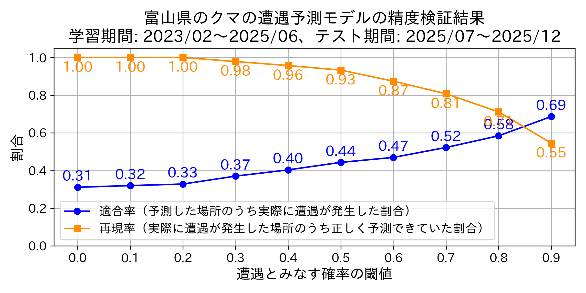
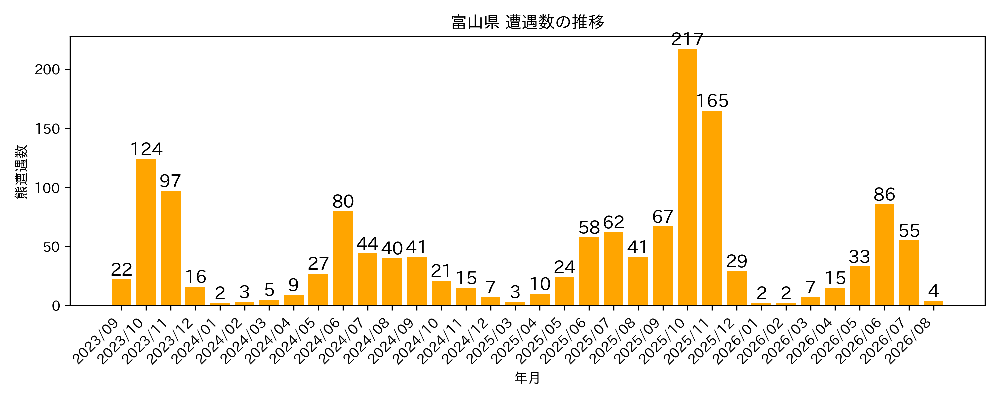

Updated: 2025.10.24 16:21:22
秋田県 | 青森県 | 山形県 | 新潟県 | 宮城県 | 福島県 | 栃木県 | 盛岡市 | 札幌市 | 東京都
このマップは、上智大学 深澤研究室で開発したモデルを使用し、富山県のデータ に基づき富山県内のクマ遭遇確率を予測したものです。
| 非常に高い | |
| 高い | |
| やや高い | |
| 可能性あり | |
| 低い |
このマップの予測はどのくらい当たるの？

クマの遭遇件数はどれぐらい増えているの？

技術的な内容・参考記事：
謝辞：
本研究では次のデータを使用しました。提供機関様に感謝します。
※このマップおよび掲載内容の無断転載・再配布を禁止します。
ご利用や転載に関するお問い合わせは、fukazawa at sophia.ac.jpまでご連絡ください。